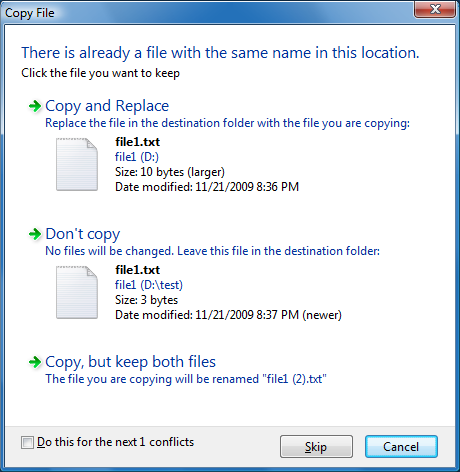
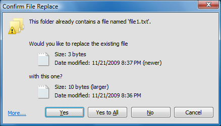
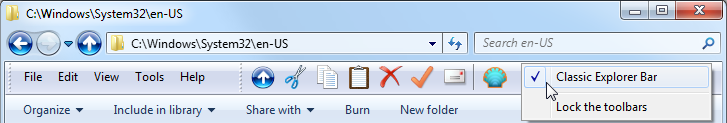
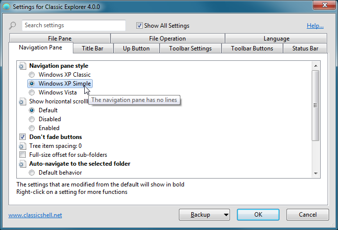
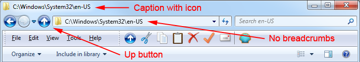
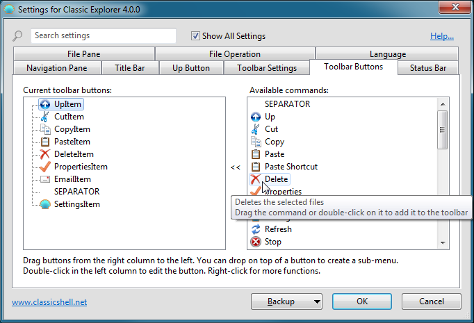
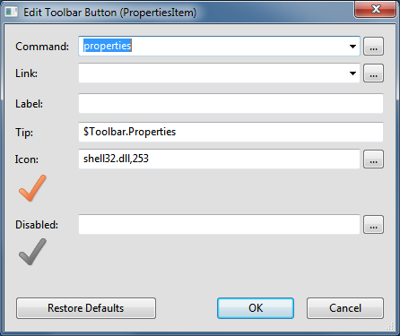
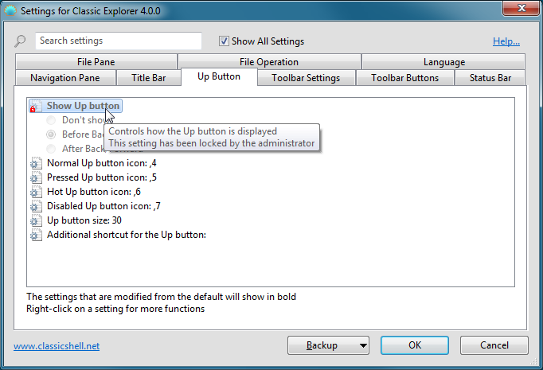
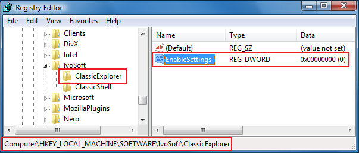

Classic Explorer
Classic
Explorer は、Windows Explorer 用のプラグインで、以下を行います：
- よく使う操作（親フォルダーへ移動、切り取り、コピー、貼り付け、削除、プロパティ、メール送信）のためのツールバーを Explorer に追加します。ツールバーは完全にカスタマイズ可能です
- Windows 7 のコピー UI を、Windows XP に似た、より使いやすい「クラシック」版に置き換えます
- Windows Explorer のフォルダーパネルで Alt+Enter を処理し、選択したフォルダーのプロパティを表示します
- フォルダーパネルを Windows XP 版に似た外観にする、または展開ボタンをフェードさせないようにするためのオプションがあります
- ステータスバーに空きディスク容量と合計ファイルサイズを表示できます
- アドレスバーのパンくずリストを無効にできます
- Windows 7 で壊れている多数の機能を修正します — 共有フォルダーのアイコンオーバーレイの欠落、ナビゲーションウィンドウでのフォルダーの飛び跳ね、リストビューでの並べ替えヘッダーの欠落など
クラシックコピー UI（Windows 7 のみ）
Vista でファイルをコピーして競合が発生すると、次の画面が表示されます：

どこが問題なのでしょうか？
まず、読まなければならない画面半分ものテキストです。また、どの部分がクリック可能なのかがすぐには分かりません。Lucas Arts のアドベンチャーゲームのように、マウスを動かして UI を探し回る必要があります。そして最後に、キーボードでの使い勝手が最悪です。
「はい、分かっています、すべてのファイルを上書きします」と伝えるには、
Alt+D、上、上、上、Space を押さなければなりません！これは Street Fighter 3 で Akuma Kara Demon move を繰り出すより難しいです。そういうものには時と場所がありますが、ファイルのコピーはそうではありません。
Classic Explorer プラグインは、Windows XP のよりシンプルなダイアログボックスを復活させます：

どこがクリック可能なのかがすぐに分かり （ヒント — 下部のボタンです）、簡単なキーボード操作ができ（「はい」には Y、すべてのファイルをコピーするには A を押します）、どのファイルが新しいか、どちらが大きいかも引き続き確認できます。そしてもちろん Windows XP と同様に、「いいえ」ボタンをクリックしながら Shift を押し続けると「すべてにいいえ」になります（または Shift+N を押すだけです）。
詳細… をクリックすると、
Windows の元のダイアログが表示されます。そこではすべての詳細を確認でき、
「コピーするが、両方のファイルを保持する」という追加オプションも利用できます。
重要な注意： 置き換えられるのは UI のみです。実際のコピーを行う基盤システムには影響しません。
フォルダーパネルでの Alt+Enter
Alt+Enter は
Windows 全体で選択項目のプロパティを表示するための普遍的なショートカットです。しかし新しいバージョンの Windows では、フォルダーを表示する左側のパネルでは機能しません。ファイルがある右側では問題なく機能します。これは、Alt+Enter が両方の場所で機能する Windows XP と比べて壊れています。
この問題を解決するため、Classic Explorer プラグインは Alt+Enter が押されたことを検出し、現在選択されているフォルダーのプロパティを表示します。
Windows Explorer 用ツールバー
Vista の Windows
Explorer には、Windows XP のようなツールバーがありません。親フォルダーへ移動したい場合はパンくずリストバーを使わなければなりません。マウスでファイルをコピーまたは削除したい場合は、右クリックして削除コマンドを探さなければなりません。シェル拡張をインストールするほど右クリックメニューはどんどん大きくなり、適切なコマンドを見つけるのに時間がかかることがあります。
この問題を解決するため、Classic Explorer プラグインは新しいツールバーを追加します：

利用可能なボタンは次のとおりです：上へ移動、切り取り、コピー、貼り付け、削除、プロパティ、
メール送信、設定。設定ダイアログからさらにボタンを追加できます。
ヒント：
- 上へ移動ボタンをクリックするときに Ctrl キーを押し続けると、親フォルダーを新しい Explorer ウィンドウで開きます。
- 削除ボタンをクリックするときに Shift キーを押し続けると、ファイルを完全に削除します
新しいツールバーは、インストール後に Explorer で自動的に表示されません。
使用する前にいくつかの操作が必要です：
- 新しい Windows Explorer ウィンドウを開きます（Win キー+E）
- Explorer のメニューをオンにします — ツール（Alt+T）、フォルダー
オプション、表示タブへ進み、「メニューを常に表示する」がチェックされていることを確認します。
- メニューバーを右クリックし、「Classic Explorer Bar」を選択して
ツールバーを表示します。
- そのオプションが利用できない場合（「ツールバーを固定する」しか表示されない場合）、Internet Explorer からプラグインを有効にする必要があるかもしれません。
IE を実行し、そのツールバーを右クリックして「Classic Explorer Bar」を選択します。
このアドオンを有効にするかどうか尋ねられます。「有効にする」を選択し、
その後手順 1 から 3 をもう一度繰り返します。
- それでもツールバーが表示されない場合は、システムでブラウザー拡張機能が無効になっている可能性があります。これは通常サーバーの既定値です。「インターネットオプション」を開き、「詳細設定」タブへ進み、
「サードパーティ製のブラウザー拡張機能を有効にする」オプションをチェックします。
ステータスバー
Classic Explorer は、空きディスク容量と選択したファイルのサイズを表示する元の Explorer ステータスバーを復元します：
組み込みのステータスバーとは異なり、100 個を超えるファイルが選択されている場合でも選択サイズが表示されます。ファイルが選択されていない場合は、フォルダー内のすべてのファイルの合計サイズが表示されます。
Windows 7 の注意： Classic Explorer は既定のステータスバーを置き換えるのではなく強化します。表示するには、まず表示メニューからオンにする必要があります。
ステータスバーは、Explorer の下部に表示される青い
詳細ウィンドウとは異なります。スペースを節約するために、整理メニューから詳細ウィンドウをオフにできます。また、Windows 7 Explorer には、ステータスバーにテキストが表示されないことがあるバグがあります。ビューを更新してステータステキストを取得するには F5 を押してください。
Windows 8 以降の注意： Classic Explorer は独自の
ステータスバーを追加します。スペースを節約するために、既定のステータスバーを非表示にすることをお勧めします。
リボンの表示タブを選択し、オプションをクリックします。オプションの
表示タブを選択します。「ステータスバーを表示する」チェックボックスを見つけて
チェックを外します。
設定
Classic Explorer の設定には、ツールバーまたはスタートメニューからアクセスできます：

基本設定のみを表示するか、利用可能なすべての設定を表示するかを選択できます。各設定にマウスを合わせると、その目的の説明が表示されます。検索ボックスに入力して、名前で設定を検索できます。
すべての設定には既定値があります。既定値は固定の場合もあれば、
現在のシステム設定に依存する場合もあります。一度設定を編集すると「変更済み」となり、太字で表示されます。既定値に戻すには、設定を右クリックします。
設定を XML ファイルに保存し、後で読み込み直すことができます。
これらの機能にアクセスするには バックアップ ボタンを押します。そこから
すべての設定を既定値にリセットすることもできます。
設定を保存するには OK を押します。ほとんどの設定は
次に新しい Explorer ウィンドウを開いたときに適用されます。少数の設定は
変更を確認するためにログオフが必要です。
注意： すべての設定ウィンドウはサイズ変更可能です。サイズを変更し、好きな場所に配置してください。新しい位置を記憶します。
カスタマイズできるものの一例を次に示します：

ツールバーをカスタマイズするには ツールバーボタン タブをクリックします：

左側の列にはツールバーの現在のボタンが表示され、
右側の列にはツールバーに追加できるボタンが一覧表示されます。右側の列から左側へボタンをドラッグアンドドロップできます。
ボタンを上下にドラッグして並べ替えることができます。あるボタンを別のボタンの内側にドロップすると、サブメニューを作成できます。
各ボタンにマウスを合わせると、その機能の短い説明が表示されます。各
ボタンを右クリックすると、より多くの機能（削除、名前の変更など）にアクセスできます。右クリックメニューから
ツールバーを元の状態にリセットすることもできます。
左側の列の各項目には一意の名前が必要です。これは
項目の識別子であり、英字、数字、アンダースコアのみを含めることができます。一部の項目（SEPARATOR など）は名前を変更できません。
重要な注意： 利用可能なすべてのコマンドに既定のアイコンやテキストがあるわけではありません。これは Windows に 元に戻す、すべて選択 などのアイコンがないためです。そのようなボタンをツールバーで使用したい場合は、独自のアイコンを用意する必要があります。方法は以下を参照してください。
ツールバーにボタンを配置した後、その属性を編集できます。編集するにはボタンをダブルクリックします：

ここでボタンのコマンド、テキスト、アイコンを選択できます。選択したコマンドの既定のテキストとアイコンを取得するには 既定値に戻す ボタンを押します。
コマンドは次のいずれかです：
- 空白のまま - この場合、link 属性が使用されていれば、それがコマンドとして機能します
- 定義済みコマンドのいずれか - ドロップダウンから選択
- open <some folder> - 現在のブラウザーでフォルダーを開きます
- sortby <property> - 指定したプロパティでフォルダーを並べ替えます - name、type、size または date。降順で並べ替えるにはプロパティの前に '-' を付けます："sortby -name"。コードを知っていれば他のプロパティも使用できます。たとえば "sortby {B725F130-47EF-101A-A5F1-02608C9EEBAC}, 10" は "sortby name" と同じです。その他のプロパティコードについては、Windows SDK の propkey.h ファイルを参照してください（こちらにもあります - 「Full property table」までスクロールしてください）。すべてのプロパティコードが有効またはサポートされているわけではありません（たとえば アルバム年 プロパティ {56A3372E-CE9C-11D2-9F0E-006097C686F6}, 5 は音楽アルバムを表示するときのみ機能します）
- groupby <property> - sortby に似ていますが、指定したプロパティでファイルをグループ化します。グループ化を無効にするには、プロパティなしで groupby コマンドを使用します
- カスタム実行可能文字列
- プログラム名とその引数、あるいは URL
（http://www.google.com など）でもかまいません。%SystemRoot% のような環境変数を使用できます。また、
プレースホルダー %1、%2、%3、%4、%5 も使用できます：
- %1 は
現在のフォルダーのパスです。現在のフォルダーがドライブのルートである場合、末尾にバックスラッシュが付くことに注意してください（C:\ など）
- %2 は選択したファイルのパスです（単一のファイルが
選択されている場合のみ）
- %3
は、選択したすべてのファイルを含む一時テキストファイルの名前です。
テキストファイルの各行には、完全なパスを持つ 1 つのファイルが含まれます
- %4
は %3 と同じですが、ファイルは Unicode（UTF16）形式です。ファイル
にはバイトオーダーマークが含まれません。%3 と %4 を同じコマンドで両方使用することはできません
- 開発者への注意：
%3 または %4 を使用する場合、コマンドの終了時に
一時ファイルを削除するのはコマンドの責任です。そうしないと、一時ファイルが残って
ディスク容量を無駄にします。また、コマンドがコンソールアプリケーション
またはバッチファイルの場合、コンソールウィンドウなしのサイレントモードで起動されます
- %5 は
一時テキストファイルの名前で、コマンドを Classic Explorer に返すために使用できます。ファイルの最初の 2 バイトが 255 と 254 の場合、
ファイルは Unicode として扱われます。一度に使用できるコマンドは 1 つだけです。コマンド
は次のいずれかです：
- open <folder name> - Explorer が指定したフォルダーへ移動します
- select <list of file names>
- 指定したファイルを選択し、それ以外の選択を解除します。ファイル名は
タブまたは改行文字で区切る必要があります。ファイルには
パスを含めないでください。含まれている場合、パスは無視されます
- refresh - Explorer を更新します
- 開発者への注意：
%5 を使用するコマンドは（%3 や %4 を使用するコマンドと同様に）サイレントモードで実行されますが、
さらに Explorer はプロセスの終了を待ちます。プロセスは
できるだけ早く終了しなければなりません。そうしないと、コマンドの実行中に Explorer がフリーズします
- これらのパラメーターの使用方法のいくつかの例については、次のセクションを参照してください
リンクには、ファイルまたはフォルダーへのパスを指定できます。ファイルの場合、
そのファイルが実行されます。フォルダーの場合、そのフォルダーが
サブメニューとして開かれます（最上位のボタンのみ）。
アイコンは次のいずれかです：
- 空白のまま - この場合、link 属性がファイルまたはフォルダーを指していれば、そのファイルまたはフォルダーのアイコンが使用されます
- リソースファイル,アイコン ID - たとえば %windir%\notepad.exe,2。ファイル名とコンマの間にスペースを入れないでください。アイコンのインデックスではなく、アイコンのリソース ID を使用していることを確認してください。 最良の結果を得るには、アイコンボックスの隣にある [...] ボタンを使用してください
- ,アイコン ID - 上記と同じですが、リソースファイルは ClassicExplorer.dll 自体です。これは Classic Explorer 自身のアイコンを参照するときに便利です
- アイコンファイル - たとえば C:\Program Files\Mozilla Thunderbird\Email.ico
- none - 空白のアイコンを使用します
label 属性または tip 属性が $（ドル記号）で始まる場合、
システムはそれを ExplorerL10N.ini
ファイル内の文字列名として扱います。実際のテキストは現在の言語設定に依存します。これは
複数の言語で使用できるツールバーを作成するときに便利です。
開発者への注意： カスタムコマンドのボタンはチェックまたは無効にできます。ツールバーはレジストリキー HKCU\Software\OpenShell\ClassicExplorer
で、ボタン名（左側の列で使用される名前）を持つ DWORD 値を確認します。0 は通常、1 は無効、2 はチェック済みを意味します。ツールバーは
起動時にレジストリキーを読み取ります。その後でボタンの状態を強制的に更新するには、
すべての Explorer ウィンドウを見つけ、クラス OpenShell.CBandWindow の子ウィンドウを特定し、メッセージ WM_CLEAR を送信する必要があります。これは、ツールバーで使用するカスタム exe を開発している場合に便利です。
カスタムコマンドの例
0) 必要に応じて引用符を使用する
スペースを含むパスをサポートするために、
パスパラメーターを引用符で囲む必要があります。以下の例 1 と 2 のように、
引用符が常に必要なわけではありません。予期しない結果を避けるため、
スペースを含むパスでコマンドをテストしてください。
1) 現在のフォルダーを表示する
次のコマンドを使用します：cmd.exe /k echo %1。%1 は現在のフォルダーのパスに置き換えられます。
2) 選択したファイルをメモ帳で開く
次のコマンドを使用します：%SystemRoot%\notepad.exe %2。
%2 は選択したファイルの完全な名前に置き換えられます。メモ帳はコマンドライン全体を
ファイル名として使用するため、引用符で囲む必要はありません。
3) 選択したファイルを親フォルダーにコピーする
C:\CopyParent.bat という名前のバッチファイルを作成します：
set list=%1
set list=%list:"=%
for /F "delims=" %%i in (%list%) do copy /Y "%%i" ..
del %1
次のコマンドを使用します：C:\CopyParent.bat "%3"。
%3 は、選択したすべてのファイルの完全な名前を含むテキストファイルに置き換えられます。バッチファイルはそのテキストファイルの各行を読み取り、
選択した各ファイルを親フォルダーにコピーします。最後に
バッチファイルは最初の
一時ファイルを削除します。最初の 2 つの set コマンドは %1 パラメーターから引用符を削除します。
4) すべてのテキストファイルを選択する
C:\SelectText.bat という名前のバッチファイルを作成します：
echo select > %1
dir *.txt /b >> %1
次のコマンドを使用します：C:\SelectText.bat "%5"。
%5 は空白のテキストファイルに置き換えられ、コマンドはそこに
「select」という単語と、選択したいファイルの一覧を出力する必要があります。「dir
*.txt /b」コマンドがその一覧を提供します。
管理者設定
設定は
ユーザーごとで、レジストリに保存されます。既定ではすべてのユーザーが
自分のすべての設定を編集できます。管理者は特定の設定をロックして、
どのユーザーも編集できないようにできます：

この例では、「上へ移動ボタンを表示する」設定が常に
「戻る/進むの前」になるようにロックされており、どのユーザーも変更できません。これは
設定を HKEY_LOCAL_MACHINE\SOFTWARE\OpenShell\ClassicExplorer レジストリキーに追加することで実現されます。「ShowUpButton」という名前の文字列値を作成し、「BeforeBack」に設定します。
場合によっては、すべてのユーザーに対して値をロックするのではなく、
設定の初期値を変更したいだけのこともあります。そのような場合は、値の名前に
「_Default」を追加します。たとえば、上へ移動ボタンを既定で戻るの前にしつつ、ユーザーが望めば変更できるようにしたい場合は、「ShowUpButton_Default」という名前の文字列値を作成し、
「BeforeBack」に設定します。
設定のレジストリ名とその値を知る最も簡単な方法は、それを変更してから
HKEY_CURRENT_USER\Software\OpenShell\ClassicExplorer\Settings で調べることです。
設定を既定値にロックしたいが、
既定値が何か分からない場合があります。その場合は DWORD 値を作成し、
0xDEFA に設定します。
グローバル設定 EnableSettings もあります。レジストリで 0 に設定すると、
ユーザーが設定ダイアログを開くことさえできなくなります：

2 つのレジストリ設定「ProcessWhiteList」と
「ProcessBlackList」を使用して、個々のプロセスに対して Classic Explorer を有効または無効にできます。ProcessWhiteList は、
Classic Explorer が読み込まれるプロセスの一覧です。プロセスのファイル名のみを使用し（「notepad.exe」など）、複数の名前は
コンマまたはセミコロンで区切ります。ProcessBlackList
は、Classic Explorer が読み込まれないプロセスの一覧です。
2 つの一覧のうち 1 つだけを使用する必要があります。両方の一覧が指定されている場合、
黒名单は無視されます。これらの一覧は、Explorer 以外のプロセスでサポートされる
機能を有効にした場合にのみ使用されます。現時点でこれらの機能は、共有オーバーレイアイコンとコピーダイアログの
置き換えです。
グループポリシーによる設定の編集もサポートされています。インストールフォルダーにある PolicyDefinitions.zip ファイルを展開し、詳細についてはドキュメント PolicyDefinitions.rtf を読んでください。
Windows 設定への依存関係
一部の Classic Explorer 設定では、特定の Windows 設定が有効になっている必要があります：
- Windows Vista ナビゲーションウィンドウのスタイル - Windows が Aero または Basic テーマを使用している必要があります
- 選択したフォルダーへ自動移動
- この設定は、Explorer が
「現在のフォルダーに自動的に展開する」に設定されている場合のみ「常に」に設定できます。ツール -> フォルダーオプション の 全般 タブで探してください
- タイトルバーにキャプションを表示する
- キャプションには、完全なパス名または現在のフォルダー名のみが表示されます。完全なパスを表示するには、
ツール -> フォルダーオプション の 表示 タブで「タイトルバーに完全なパスを表示する（クラシックテーマのみ）」を有効にする必要があります
- すべてのステータスバー設定 - ステータスバーが表示されている必要があります（詳細ウィンドウと混同しないでください）。表示 -> ステータスバー をチェックします
ローカライズ
ユーザー
インターフェイス（設定ダイアログボックスを除く）は 35 の
言語にローカライズされています。
設定ダイアログボックスは、より少ない数の言語に翻訳されています。
既定のインストールには英語のみが含まれます。より多くの言語は 翻訳ページ からダウンロードできます。Open-Shell の正確なバージョン用の翻訳パッケージをダウンロードするようにしてください。